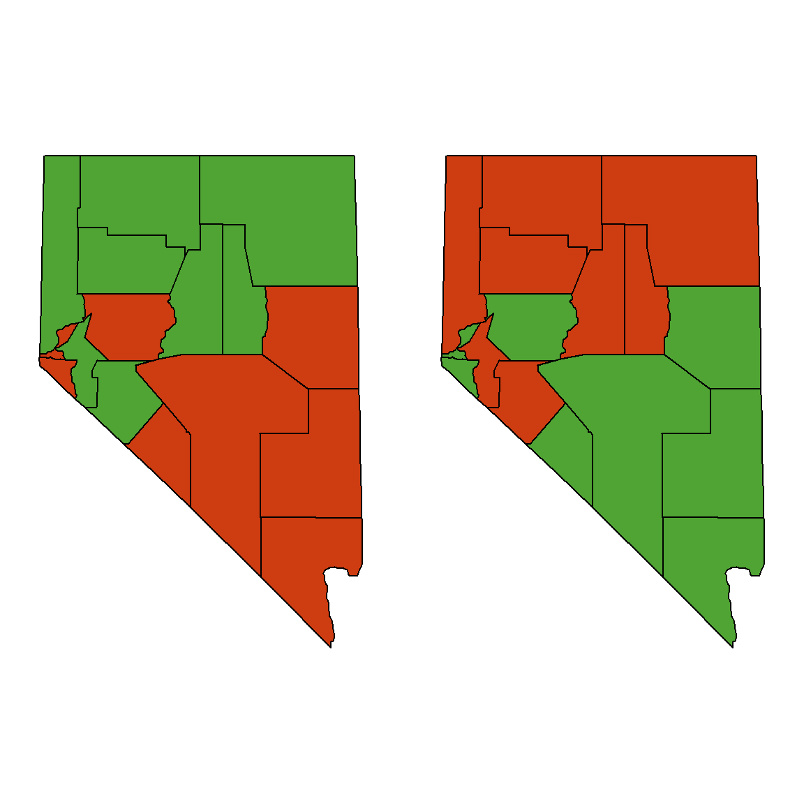
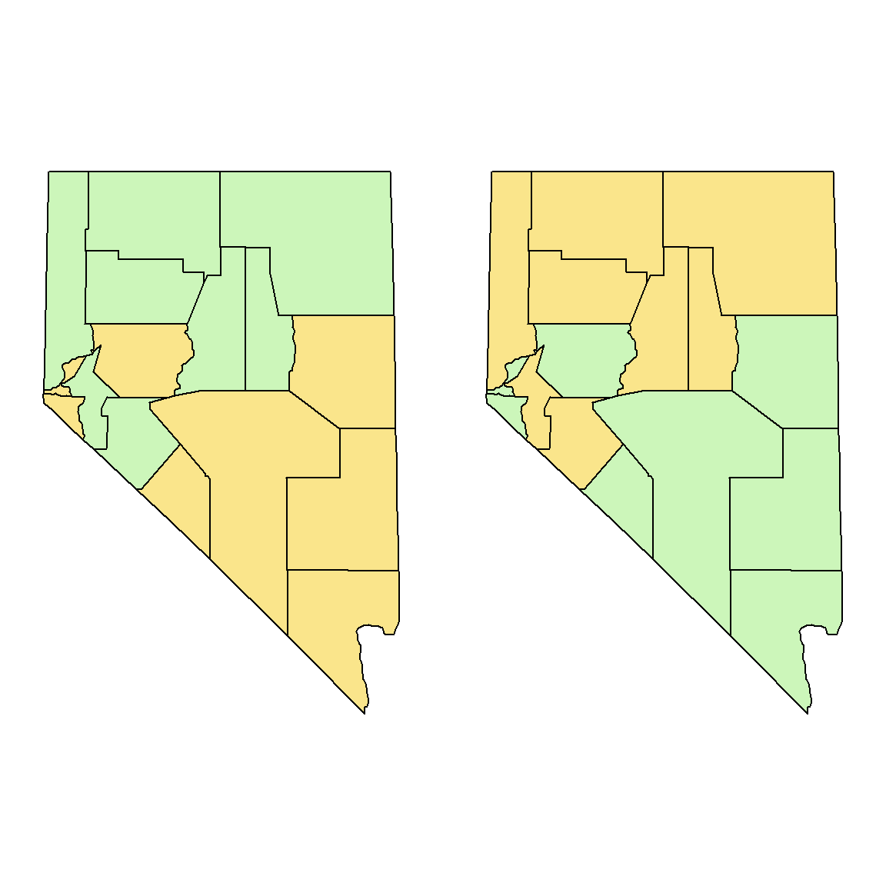

illusion.RmdCleveland and McGill (1983) conducted experiments with different partitionings of colored-areas that were nearly the same size. In the example below, the two colored regions are less tha 1% different in area.
Using a map (similar to the one below left) with regions coded by two saturated colors, 49% of subjects said the red area was bigger, 22% said the green was bigger, and 31% said the areas were the same.
library(maps)
#library(mapproj)
#nv <- map('county', 'nevada', fill=TRUE, col=1:12, projection="mollweide")
reds <- c("nevada,carson city", "nevada,churchill", "nevada,clark",
"nevada,douglas", "nevada,esmeralda", "nevada,lincoln",
"nevada,nye", "nevada,storey", "nevada,white pine")
grns <- c("nevada,elko", "nevada,eureka", "nevada,humboldt", "nevada,lander",
"nevada,lyon", "nevada,mineral", "nevada,pershing", "nevada,washoe")
nv.names <- c(reds,grns)
# Draw the map and color it
nv.names <- map('county', 'nevada', namesonly=TRUE, plot=FALSE)
# green/red
op <- par(mar=c(0,1,0,1), mfrow=c(1,2))
nv <- map('county', 'nevada', fill=TRUE,
col=ifelse(nv.names %in% reds,
rgb(206, 60, 17, max=255), # red
rgb(80,164,52, max=255)), # green
projection="mollweide")
# red/green
nv <- map('county', 'nevada', fill=TRUE,
col=ifelse(nv.names %in% reds,
rgb(80,164,52, max=255),
rgb(206, 60, 17, max=255)),
projection="mollweide")
## [1] 55581.16## [1] 55686.61When low-saturated, muted colors were used, the observers demonstrated no systematic biases.
op <- par(mar=c(0,1,0,1), mfrow=c(1,2))
# green/tan
nv <- map('county', 'nevada', fill=TRUE,
col=ifelse(nv.names %in% reds,
rgb(250, 229, 139, max=255),
rgb(204, 246, 186, max=255)),
projection="mollweide")
# tan/green
nv <- map('county', 'nevada', fill=TRUE,
col=ifelse(nv.names %in% reds,
rgb(204, 246, 186, max=255),
rgb(250, 229, 139, max=255)),
projection="mollweide")
Cleveland, William S., and Robert McGill. 1983. “A Color-Caused Optical Illusion on a Statistical Graph.” The American Statistcian 37: 101–5. https://doi.org/10.2307/2685868.